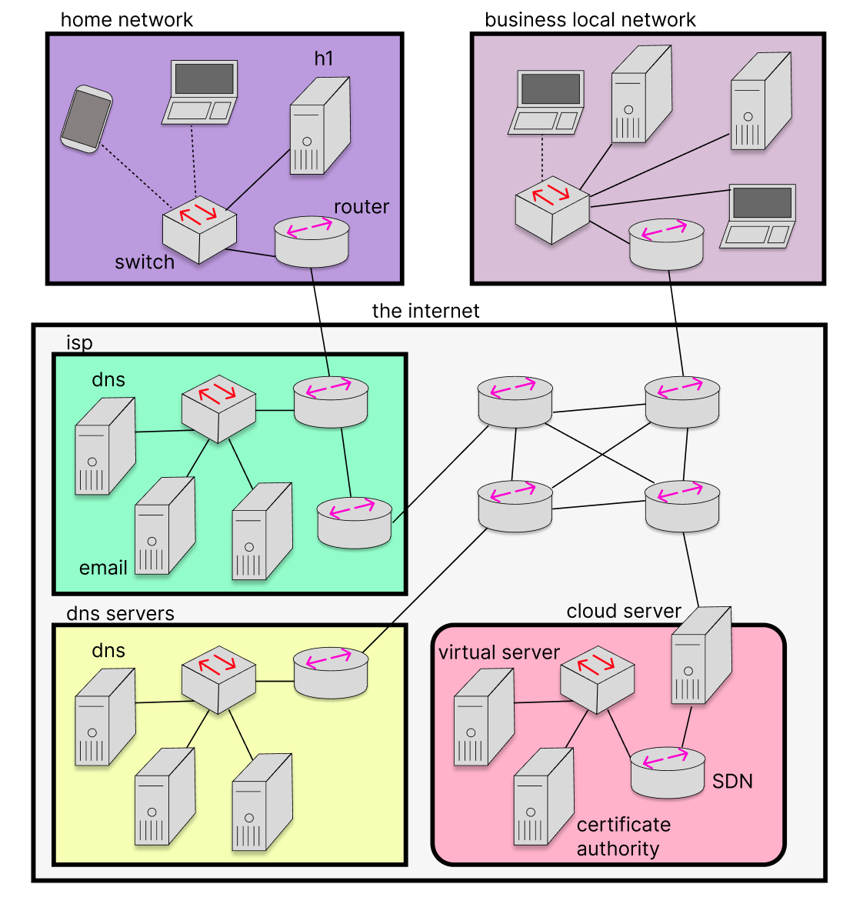
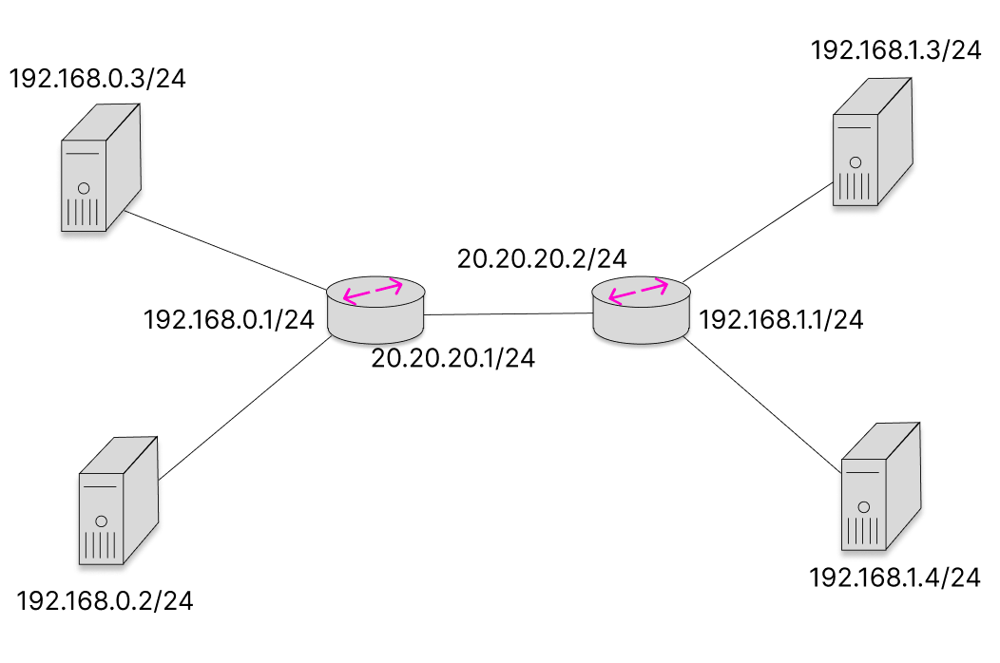
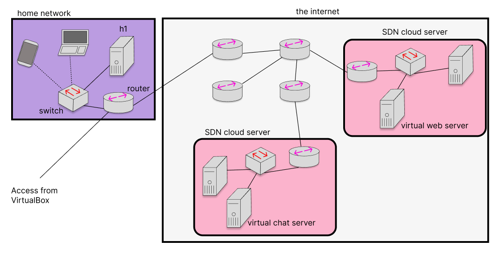

The purpose of this lab is to:
- Using Mininet, investigate architectures that simulate the real world
- Using Software-Defined Network, write algorithms to route traffic over this simulated internet
ENSE 472 - Digital Networks - Laboratory
University of Regina - Engineering and Applied Science - Software Systems Engineering
Lab Instructor: Adam Tilson
The purpose of this lab is to:
A computer running Windows, MacOS or Linux, with an Intel or AMD-based processor (x86 or x86-64) with administrator privileges
And
A VirtualBox Image of ZorinOS Lite prepared by Adam (Updated for Lab 3)
zorin, and password is zorinmininetzorin and zorin.As a Software Developer, you will be writing applications that run on the internet. This may include software running on a real hardware server, or virtualized “in the cloud”. For this reason, it is important to have an overview of the internet, and the various components which comprise is, so that you know the capabilities and drawbacks of this technology.

In the previous lab we were modeling these elements as hosts and switches. In the real world it’s important to differentiate between layer-2 switches, which only understand Physical (MAC) addresses vs. layer-3 switches which understand IP addresses. When using layer-3 devices, in order for traffic to be delivered, the hosts must be on the same subnet, otherwise a NAT is required to deliver traffic across subnets.
In this lab we will model chunks of this network, to get a better understanding of how the different pieces work together.
In order for two devices on the same physical network to connect with one another directly, they need to be on the same subnet, that is their addresses need to match in a specific way:
Consider the subnet address:
192.168.1.2/16
This address is comprised of an address:
192.168.1.2
And a subnet mask:
255.255.0.0
When you use the bitwise AND operation on these numbers, you get the portion of the address which identifies the network:
192.168.0.0
The remaining portion is the bits which defines the device:
0.0.1.2
So, the following devices would be considered to be on the same subnet:
192.168.1.2 / 16
and
192.168.0.3 / 16
As these would have the same network identifier:
192.168.0.0
However, the following devices would not:
192.168.0.3 / 16
and
192.170.0.3 / 16
These devices are considered to be on two separate networks, and typically require a layer-3 routing device to transmit packets between them.
In particular, the 192.168.X.X/16 IP address is a private address, meaning any device can use this address, so multiple of these networks with the same addresses may exist. Let’s see how this works in the real world. Let’s create the simple mininet default network
$ sudo mn
mininet> h1 ifconfig
h1-eth0: flags=4163<UP,BROADCAST,RUNNING,MULTICAST> mtu 1500
inet 10.0.0.1 netmask 255.0.0.0 broadcast 10.255.255.255
inet6 fe80::900c:f4ff:fe40:b342 prefixlen 64 scopeid 0x20<link>
ether 92:0c:f4:40:b3:42 txqueuelen 1000 (Ethernet)
RX packets 31 bytes 3500 (3.5 KB)
RX errors 0 dropped 0 overruns 0 frame 0
TX packets 9 bytes 726 (726.0 B)
TX errors 0 dropped 0 overruns 0 carrier 0 collisions 0
lo: flags=73<UP,LOOPBACK,RUNNING> mtu 65536
inet 127.0.0.1 netmask 255.0.0.0
inet6 ::1 prefixlen 128 scopeid 0x10<host>
loop txqueuelen 1000 (Local Loopback)
RX packets 0 bytes 0 (0.0 B)
RX errors 0 dropped 0 overruns 0 frame 0
TX packets 0 bytes 0 (0.0 B)
TX errors 0 dropped 0 overruns 0 carrier 0 collisions 0
We can see that, by deafult, our devices are given the 10.0.0.1 address on the 255.0.0.0 mask. This means that this device is on the 10.0.0.0 network. Let’s examine the other device:
mininet> h2 ifconfig
h2-eth0: flags=4163<UP,BROADCAST,RUNNING,MULTICAST> mtu 1500
inet 10.0.0.2 netmask 255.0.0.0 broadcast 10.255.255.255
inet6 fe80::3418:2dff:fe5c:ba10 prefixlen 64 scopeid 0x20<link>
ether 36:18:2d:5c:ba:10 txqueuelen 1000 (Ethernet)
RX packets 36 bytes 3924 (3.9 KB)
RX errors 0 dropped 0 overruns 0 frame 0
TX packets 10 bytes 796 (796.0 B)
TX errors 0 dropped 0 overruns 0 carrier 0 collisions 0
lo: flags=73<UP,LOOPBACK,RUNNING> mtu 65536
inet 127.0.0.1 netmask 255.0.0.0
inet6 ::1 prefixlen 128 scopeid 0x10<host>
loop txqueuelen 1000 (Local Loopback)
RX packets 0 bytes 0 (0.0 B)
RX errors 0 dropped 0 overruns 0 frame 0
TX packets 0 bytes 0 (0.0 B)
TX errors 0 dropped 0 overruns 0 carrier 0 collisions 0
Confirm connectivity with the following command:
mininet> h1 ping h2
Recall: Use ctrl+c to stop the ping
Let’s try changing the address of the second host, while remaining in the subnet, and see if connectivity remains. We will change it to 10.1.2.3/8, which is on the same subnet:
mininet> h2 ip addr flush dev h2-eth0
mininet> h2 ip addr add 10.1.2.3/8 dev h2-eth0
mininet> h1 ping h2
PING 10.1.2.3 (10.1.2.3) 56(84) bytes of data.
64 bytes from 10.1.2.3: icmp_seq=1 ttl=64 time=11.5 ms
64 bytes from 10.1.2.3: icmp_seq=2 ttl=64 time=0.234 ms
64 bytes from 10.1.2.3: icmp_seq=3 ttl=64 time=0.073 ms
64 bytes from 10.1.2.3: icmp_seq=4 ttl=64 time=0.083 ms
...
Because these devices are on the same subnet, they may still communicate. On the other hand, if we change it to an address off the subnet:
mininet> h2 ip addr flush dev h2-eth0
mininet> h2 ip addr add 192.168.1.2/16 dev h2-eth0
mininet> h1 ping h2
ping: connect: Network is unreachable
mininet> h2 ping h1
ping: connect: Network is unreachable
The devices no longer know how to reach the other. However, if we change h1 to be on the same subnet:
mininet> h1 ip addr flush dev h1-eth0
mininet> h1 ip addr add 192.168.2.3/16 dev h1-eth0
mininet> h1 ping h2
PING 192.168.1.2 (192.168.1.2) 56(84) bytes of data.
64 bytes from 192.168.1.2: icmp_seq=1 ttl=64 time=2.45 ms
64 bytes from 192.168.1.2: icmp_seq=2 ttl=64 time=0.312 ms
64 bytes from 192.168.1.2: icmp_seq=3 ttl=64 time=0.075 ms
64 bytes from 192.168.1.2: icmp_seq=4 ttl=64 time=0.074 ms
...
Now connectivity has been resumed.
However, we can easily envision scenarios where devices on separate subnets would need to communicate, such as the following:
In a real world architecture, this could be achieved by using a gateway NAT router, a device which effectively straddles two (or more) networks, and sends data to the appropriate network based on the data recieved. In Software Defined Networks, instead this is typically achieved using only routing tables.
Let’s build the following custom topology (refer back to the previous lab documents if you do not recall how to do this). Save this as /home/zorin/mininet/custom/subnets.py.
"""Custom topology example
We will try doing two different subnets
host ---\ /--- host
switch --- switch --- switch
host ---/ \--- host
"""
from mininet.topo import Topo
class MyTopo( Topo ):
"Simple topology example."
def build( self ):
"Create custom topo."
# Add hosts and switches
upperLeftHost = self.addHost( 'h1', ip='192.168.0.5/16' )
lowerLeftHost = self.addHost( 'h2', ip='192.168.0.6/16' )
upperRightHost = self.addHost( 'h3', ip='200.1.2.3/8' )
lowerRightHost = self.addHost( 'h4', ip='200.3.4.5/8' )
leftSwitch = self.addSwitch( 's1' )
centerSwitch = self.addSwitch( 's2' )
rightSwitch = self.addSwitch( 's3' )
# Add links
self.addLink( upperLeftHost, leftSwitch )
self.addLink( lowerLeftHost, leftSwitch )
self.addLink( upperRightHost, rightSwitch )
self.addLink( lowerRightHost, rightSwitch )
self.addLink ( leftSwitch, centerSwitch )
self.addLink ( centerSwitch, rightSwitch )
topos = { 'subnets': ( lambda: MyTopo() ) }
And let’s demo it out:
$ cd /home/zorin/mininet/custom/
$ sudo mn --custom=subnets.py --topo=subnets
*** Creating network
*** Adding controller
*** Adding hosts:
h1 h2 h3 h4
*** Adding switches:
s1 s2 s3
*** Adding links:
(h1, s1) (h2, s1) (h3, s3) (h4, s3) (s1, s2) (s2, s3)
*** Configuring hosts
h1 h2 h3 h4
*** Starting controller
c0
*** Starting 3 switches
s1 s2 s3 ...
*** Starting CLI:
mininet> h1 ping h2
PING 192.168.0.6 (192.168.0.6) 56(84) bytes of data.
64 bytes from 192.168.0.6: icmp_seq=1 ttl=64 time=1.37 ms
64 bytes from 192.168.0.6: icmp_seq=2 ttl=64 time=0.280 ms
64 bytes from 192.168.0.6: icmp_seq=3 ttl=64 time=0.073 ms
^C
--- 192.168.0.6 ping statistics ---
3 packets transmitted, 3 received, 0% packet loss, time 2024ms
rtt min/avg/max/mdev = 0.073/0.575/1.372/0.569 ms
mininet> h1 ping h3
ping: connect: Network is unreachable
mininet> h3 ping h4
PING 200.3.4.5 (200.3.4.5) 56(84) bytes of data.
64 bytes from 200.3.4.5: icmp_seq=1 ttl=64 time=4.08 ms
64 bytes from 200.3.4.5: icmp_seq=2 ttl=64 time=0.292 ms
64 bytes from 200.3.4.5: icmp_seq=3 ttl=64 time=0.077 ms
64 bytes from 200.3.4.5: icmp_seq=4 ttl=64 time=0.061 ms
^C
--- 200.3.4.5 ping statistics ---
4 packets transmitted, 4 received, 0% packet loss, time 3048ms
rtt min/avg/max/mdev = 0.061/1.128/4.082/1.707 ms
As you can see, we can ping back and forth on the same subnets, but not across subnets.
So why is this failing? It is because the hosts do not know where to send packets that are not on the current network. We can tell them where to send packets on other networks using a default port, in other words - if we don’t know which network this is on, try sending it out this ethernet device:
h1 ip route add default via 192.168.0.5
h2 ip route add default via 192.168.0.6
h3 ip route add default via 200.1.2.3
h4 ip route add default via 200.3.4.5
With this update made, the host knows to send data out of the same device as for the local network. Note that Mininet is still doing a lot of the heavy lifting for us, since the SDN algorithm is able to learn the location of the new hosts and forward accordingly.
Let’s simplify our network slightly to make it a bit easier to follow:
This will be represented in the following code. Save this one as /home/zorin/mininet/custom/subnets-mini.py:
"""Custom topology example
We will try doing two different subnets
host ---\ /--- host
switch --- switch
host ---/ \--- host
"""
from mininet.topo import Topo
class MyTopo( Topo ):
"Simple topology example."
def build( self ):
"Create custom topo."
# Add hosts and switches
upperLeftHost = self.addHost( 'h1', ip='192.168.0.3/24' )
lowerLeftHost = self.addHost( 'h2', ip='192.168.0.2/24' )
upperRightHost = self.addHost( 'h3', ip='192.168.1.3/24' )
lowerRightHost = self.addHost( 'h4', ip='192.168.1.4/24' )
leftSwitch = self.addSwitch( 's1' )
rightSwitch = self.addSwitch( 's2' )
# Add links
self.addLink( upperLeftHost, leftSwitch )
self.addLink( lowerLeftHost, leftSwitch )
self.addLink( upperRightHost, rightSwitch )
self.addLink( lowerRightHost, rightSwitch )
self.addLink ( leftSwitch, rightSwitch )
topos = { 'subnets': ( lambda: MyTopo() ) }
cd /home/zorin/mininet/custom/
sudo mn --custom=subnets-mini.py --topo=subnets
We can confirm our architcture is working as expected with pingall:
mininet> pingall
*** Ping: testing ping reachability
h1 -> h2 X X
h2 -> h1 X X
h3 -> X X h4
h4 -> X X h3
*** Results: 66% dropped (4/12 received)
Let’s close this simulation, and start another one:
cd /home/zorin/mininet/custom/
sudo mn --mac --custom=subnets-mini.py --topo=subnets --controller=remote
We added a new command to our mininet here, --mac. This assigns our devices low level MACs that are human readable, so instead of seeing things like:
ether f6:9d:5a:7f:41:42
Instead we see:
ether 00:00:00:00:00:01
Recall that MAC addresses are physical addresses which are typically assigned to a device from the device manufacturer, and are (theoretically) unique.
You can verify with h1 ifconfig
mininet> h1 ifconfig
h1-eth0: flags=4163<UP,BROADCAST,RUNNING,MULTICAST> mtu 1500
inet 192.168.0.3 netmask 255.255.255.0 broadcast 192.168.0.255
inet6 fe80::200:ff:fe00:1 prefixlen 64 scopeid 0x20<link>
ether 00:00:00:00:00:01 txqueuelen 1000 (Ethernet)
RX packets 35 bytes 3909 (3.9 KB)
RX errors 0 dropped 0 overruns 0 frame 0
TX packets 16 bytes 1292 (1.2 KB)
TX errors 0 dropped 0 overruns 0 carrier 0 collisions 0
lo: flags=73<UP,LOOPBACK,RUNNING> mtu 65536
inet 127.0.0.1 netmask 255.0.0.0
inet6 ::1 prefixlen 128 scopeid 0x10<host>
loop txqueuelen 1000 (Local Loopback)
RX packets 0 bytes 0 (0.0 B)
RX errors 0 dropped 0 overruns 0 frame 0
TX packets 0 bytes 0 (0.0 B)
TX errors 0 dropped 0 overruns 0 carrier 0 collisions 0
In the previous lab, we were able to simulate layer-2 devices using the POX framework. We will similarly use another framework for simulating layer-3 gateway routers, this one is called Ryu. You may add it to your VirtualBox with the following commands:
pip install ryu
pip install eventlet==0.30.2
Next, let’s do some setup for our devices. We will tell each host where to find it’s Gateway, as per the following figure

h1 route add default gw 192.168.0.1
h2 route add default gw 192.168.0.1
h3 route add default gw 192.168.1.1
h4 route add default gw 192.168.1.1
This means that, whenever your machine has traffic that is due for outside the subnet, it will send it to the device with the address listed as the Gateway. So we are going to need to assign these addresses to some devices. Let’s try this using Ryu.
Let’s start up ryu using the REST router:
ryu-manager --verbose ryu.app.rest_router
This router provides a REST api which allows you to issue commands to RYU using JSON for configuring your routers. We can use a web utility, such as CURL, to accomplish this. What we wish to do is assign the Switches as gateway routers - these typically have two connections, one for the local network side, and one for the internet side. Run these in a separate window apart from mininet and ryu
curl -X POST -d '{"address":"192.168.0.1/24"}' http://localhost:8080/router/0000000000000001
curl -X POST -d '{"address":"20.20.20.1/24"}' http://localhost:8080/router/0000000000000001
curl -X POST -d '{"address":"192.168.1.1/24"}' http://localhost:8080/router/0000000000000002
curl -X POST -d '{"address":"20.20.20.2/24"}' http://localhost:8080/router/0000000000000002
If you try to test connectivity it still will not work. Let’s investigate to see why:
mininet> h1 ping 192.168.0.1
PING 192.168.0.1 (192.168.0.1) 56(84) bytes of data.
64 bytes from 192.168.0.1: icmp_seq=1 ttl=64 time=1.76 ms
64 bytes from 192.168.0.1: icmp_seq=2 ttl=64 time=2.01 ms
64 bytes from 192.168.0.1: icmp_seq=3 ttl=64 time=2.11 ms
64 bytes from 192.168.0.1: icmp_seq=4 ttl=64 time=1.87 ms
...
This succeeds, so our host can find our gateway.
mininet> h1 ping 20.20.20.1
PING 20.20.20.1 (20.20.20.1) 56(84) bytes of data.
64 bytes from 20.20.20.1: icmp_seq=1 ttl=64 time=4.00 ms
64 bytes from 20.20.20.1: icmp_seq=2 ttl=64 time=1.98 ms
64 bytes from 20.20.20.1: icmp_seq=3 ttl=64 time=2.18 ms
64 bytes from 20.20.20.1: icmp_seq=4 ttl=64 time=1.77 ms
Our host can also reach the far side of the router.
Next, we can test:
mininet> h1 ping 20.20.20.2
PING 20.20.20.2 (20.20.20.2) 56(84) bytes of data.
64 bytes from 20.20.20.2: icmp_seq=1 ttl=63 time=1.73 ms
64 bytes from 20.20.20.2: icmp_seq=2 ttl=63 time=2.12 ms
64 bytes from 20.20.20.2: icmp_seq=3 ttl=63 time=1.74 ms
64 bytes from 20.20.20.2: icmp_seq=4 ttl=63 time=1.92 ms
Our host can reach the second router on the far side. But can we reach the router on the far side acting on the second network?
mininet> h1 ping 192.168.1.1
PING 192.168.1.1 (192.168.1.1) 56(84) bytes of data.
Nope. But that’s weird, we were able to reach this exact same device on the other side. Ponder why this might be.
The reason we failed is because Router 1 does not know where to send traffic destined for the second network. Similarly to before, we need to tell our devices where to send packages that they do not otherwise recognize.
curl -X POST -d '{"gateway":"20.20.20.2"}' http://localhost:8080/router/0000000000000001
curl -X POST -d '{"gateway":"20.20.20.1"}' http://localhost:8080/router/0000000000000002
So, when router 1 gets a packet it does not recognize, it will send it to router 2, and vice versa.
And with that, our Switches will be acting as L3 routers!
Let’s do our final tests:
mininet> h1 ping 192.168.1.1
PING 192.168.1.1 (192.168.1.1) 56(84) bytes of data.
64 bytes from 192.168.1.1: icmp_seq=1 ttl=63 time=1.64 ms
64 bytes from 192.168.1.1: icmp_seq=2 ttl=63 time=2.18 ms
64 bytes from 192.168.1.1: icmp_seq=3 ttl=63 time=2.19 ms
64 bytes from 192.168.1.1: icmp_seq=4 ttl=63 time=2.18 ms
mininet> h1 ping h3
PING 192.168.1.3 (192.168.1.3) 56(84) bytes of data.
64 bytes from 192.168.1.3: icmp_seq=1 ttl=62 time=0.606 ms
64 bytes from 192.168.1.3: icmp_seq=2 ttl=62 time=0.071 ms
64 bytes from 192.168.1.3: icmp_seq=3 ttl=62 time=0.067 ms
64 bytes from 192.168.1.3: icmp_seq=4 ttl=62 time=0.079 ms
mininet> pingall
*** Ping: testing ping reachability
h1 -> h2 h3 h4
h2 -> h1 h3 h4
h3 -> h1 h2 h4
h4 -> h1 h2 h3
So this is a good simulation of how Layer 3 devices work in the real world. As previously mentioned, in SDN world, we actually don’t need to assign all router IP addresses, but in the real world this is required.
Finally, we can also set up static routes:
curl -X POST -d '{"destination": "192.168.1.0/24", "gateway": "20.20.20.2"}' http://localhost:8080/router/0000000000000001
This means that, if a package is destined for anywhere on the 192.168.1.0/24 network, we will send it through the gateway 20.20.20.2. This would be useful if there isn’t a single connection through which a router may dump all unknown traffic.
In the previous lab, we saw that complex network topologies often included loops, for the purpose of redundancy. However, logically these create problems for sending our packets, because there is no one clear path from the source to the destination.
The way to solve this is by creating a spanning tree - through flooding, the OpenFlow algorithms learns a subset of links which are required to reach our destination.
Let’s try it out!
Begin by creating the following network:
creating the following file at:
/home/zorin/mininet/custom/mesh.py
"""Custom topology example
We will try doing two different subnets
host --- switch --- switch --- host
| \/ |
| /\ |
host --- switch --- switch --- host
"""
from mininet.topo import Topo
class MyTopo( Topo ):
"Simple topology example."
def build( self ):
"Create custom topo."
# Add hosts and switches
lLH = self.addHost( 'h1' )
lRH = self.addHost( 'h2' )
uLH = self.addHost( 'h3' )
uRH = self.addHost( 'h4' )
lLS = self.addSwitch( 's1' )
lRS = self.addSwitch( 's2' )
uLS = self.addSwitch( 's3' )
uRS = self.addSwitch( 's4' )
# Add links
self.addLink( lLH, lLS )
self.addLink( lRH, lRS )
self.addLink( uLH, uLS )
self.addLink( uRH, uRS )
self.addLink( lLS, lRS )
self.addLink( lLS, uLS )
self.addLink( lLS, uRS )
self.addLink( lRS, uLS )
self.addLink( lRS, uRS )
self.addLink( uLS, uRS )
topos = { 'mesh': ( lambda: MyTopo() ) }
We will used an advanced controller in the POX library for handling this flow:
cd ~
pox/pox.py openflow.spanning_tree --no-flood --hold-down openflow.discovery forwarding.l2_learning host_tracker info.packet_dump log.level --DEBUG samples.pretty_log
Let’s look at each part of this:
forwarding.l2_learning - OpenFlow switches act like Ethernet switches, learning MAC addresses
openflow.spanning_tree ‐‐no-flood ‐‐hold-down
host_tracker - keep track of hosts in the network.
info.packet_dump - display info on the log console about packets recieved by POX
log.level --DEBUG samples.pretty_log - Display only useful information about the controller
cd ~/mininet/custom
sudo mn --mac --custom=mesh.py --topo=mesh --controller=remote
You may need to give the routers a few moments to propagate the routing information. Test out the network:
mininet> pingall
*** Ping: testing ping reachability
h1 -> h2 h3 h4
h2 -> h1 h3 h4
h3 -> h1 h2 h4
h4 -> h1 h2 h3
*** Results: 0% dropped (12/12 received)
Let’s try to sever a couple of the links. Let’s remove the 2 that go across and the one that goes along the bottom:
mininet> link s2 s3 down
mininet> link s1 s4 down
mininet> link s1 s2 down
When you first try this it may fail…
mininet> link s2 s3 down
mininet> link s1 s4 down
mininet> link s1 s2 down
mininet> pingall
*** Ping: testing ping reachability
h1 -> X h3 X
h2 -> h1 h3 X
h3 -> h1 h2 X
h4 -> h1 h2 h3
*** Results: 33% dropped (8/12 received)
However, once the network replairs, that is, finds new routes
mininet> pingall
*** Ping: testing ping reachability
h1 -> h2 h3 h4
h2 -> h1 h3 h4
h3 -> h1 h2 h4
h4 -> h1 h2 h3
*** Results: 0% dropped (12/12 received)
In the final section of our Mininet lab, we will look at the situation where we wish to access applications running on our server from Mininet to test them. The advantage of this is that we can develop an entire Network application in Mininet which is hardware agnostic, and then migrate it to a different architecture later on. In other words, in the diagram we examined earlier:
The following can be seen as a single component which can be migrated to any hardware and run independantly.
To begin, let’s investigate the state of our current. Running from the VirtualBox terminal:
zorin@zorin-VirtualBox:~/Desktop$ ifconfig
enp0s3: flags=4163<UP,BROADCAST,RUNNING,MULTICAST> mtu 1500
inet 10.0.2.15 netmask 255.255.255.0 broadcast 10.0.2.255
inet6 fe80::ca8c:6395:5814:41a prefixlen 64 scopeid 0x20<link>
ether 08:00:27:e1:f1:cf txqueuelen 1000 (Ethernet)
RX packets 13 bytes 1808 (1.8 KB)
RX errors 0 dropped 0 overruns 0 frame 0
TX packets 65 bytes 7407 (7.4 KB)
TX errors 0 dropped 0 overruns 0 carrier 0 collisions 0
lo: flags=73<UP,LOOPBACK,RUNNING> mtu 65536
inet 127.0.0.1 netmask 255.0.0.0
inet6 ::1 prefixlen 128 scopeid 0x10<host>
loop txqueuelen 1000 (Local Loopback)
RX packets 169 bytes 12453 (12.4 KB)
RX errors 0 dropped 0 overruns 0 frame 0
TX packets 169 bytes 12453 (12.4 KB)
TX errors 0 dropped 0 overruns 0 carrier 0 collisions 0
Without Mininet running, we have only one interface which can reach other networks, enp0s3.
Let’s create a small custom topology in:
~/mininet/custom/external.py
from mininet.topo import Topo
class MyTopo( Topo ):
"Simple topology example."
def build( self ):
"Create custom topo."
# Add hosts and switches
switch = self.addSwitch('s1')
host1 = self.addHost('h1', ip='192.168.02.04/24')
host2 = self.addHost('h2', ip='192.168.02.05/24')
# Add links
self.addLink(host1, switch)
self.addLink(host2, switch)
topos = { 'external': ( lambda: MyTopo() ) }
Let’s run this topology:
cd ~/mininet/custom/
sudo mn --custom external.py --topo external
From our local machine we would like to be able to ping these hosts, however it fails:
zorin@zorin-VirtualBox:~/Desktop$ ping 192.168.02.04
PING 192.168.02.04 (192.168.2.4) 56(84) bytes of data.
^C
--- 192.168.02.04 ping statistics ---
4 packets transmitted, 0 received, 100% packet loss, time 3054ms
Let’s add some default routes:
h1 ip route add default via 192.168.02.01
h2 ip route add default via 192.168.02.01
Note that a device with this address does not exist yet, we will create it shortly!
We wish to assign this address to s1. We may investigate it’s current address state with:
mininet> sh ip addr show s1
4: s1: <BROADCAST,MULTICAST> mtu 1500 qdisc noop state DOWN group default qlen 1000
link/ether 02:15:47:a6:f3:4c brd ff:ff:ff:ff:ff:ff
We can see this interface has no address and is DOWN. Let’s fix these things:
sh ip addr add 192.168.02.01/24 dev s1
sh ip link set s1 up
Please note - you may run these lines multiple times to add multiple addresses to a router. This will be useful if you want your router to span multiple networks!
Running again we see:
mininet> sh ip addr show s1
4: s1: <BROADCAST,MULTICAST,UP,LOWER_UP> mtu 1500 qdisc noqueue state UNKNOWN group default qlen 1000
link/ether 02:15:47:a6:f3:4c brd ff:ff:ff:ff:ff:ff
inet 192.168.2.1/24 scope global s1
valid_lft forever preferred_lft forever
inet6 fe80::15:47ff:fea6:f34c/64 scope link tentative
valid_lft forever preferred_lft forever
Let’s see if h1 and h2 can ping this gateway address:
mininet> h1 ping 192.168.02.01
PING 192.168.02.01 (192.168.2.1) 56(84) bytes of data.
64 bytes from 192.168.2.1: icmp_seq=1 ttl=64 time=0.042 ms
64 bytes from 192.168.2.1: icmp_seq=2 ttl=64 time=0.050 ms
64 bytes from 192.168.2.1: icmp_seq=3 ttl=64 time=0.048 ms
64 bytes from 192.168.2.1: icmp_seq=4 ttl=64 time=0.055 ms
^C
--- 192.168.02.01 ping statistics ---
4 packets transmitted, 4 received, 0% packet loss, time 3066ms
rtt min/avg/max/mdev = 0.042/0.048/0.055/0.004 ms
mininet> h2 ping 192.168.02.01
PING 192.168.02.01 (192.168.2.1) 56(84) bytes of data.
64 bytes from 192.168.2.1: icmp_seq=1 ttl=64 time=6.32 ms
64 bytes from 192.168.2.1: icmp_seq=2 ttl=64 time=0.287 ms
64 bytes from 192.168.2.1: icmp_seq=3 ttl=64 time=0.088 ms
64 bytes from 192.168.2.1: icmp_seq=4 ttl=64 time=0.073 ms
^C
--- 192.168.02.01 ping statistics ---
4 packets transmitted, 4 received, 0% packet loss, time 3044ms
rtt min/avg/max/mdev = 0.073/1.691/6.317/2.672 ms
Good, so we can connect to the gateway from our internal hosts.
Further, if from inside the VirtualMachine we can see if we can access our router:
ifconfig
s1: flags=4163<UP,BROADCAST,RUNNING,MULTICAST> mtu 1500
inet 192.168.2.1 netmask 255.255.255.0 broadcast 0.0.0.0
inet6 fe80::15:47ff:fea6:f34c prefixlen 64 scopeid 0x20<link>
ether 02:15:47:a6:f3:4c txqueuelen 1000 (Ethernet)
RX packets 8 bytes 504 (504.0 B)
RX errors 0 dropped 6 overruns 0 frame 0
TX packets 56 bytes 6582 (6.5 KB)
TX errors 0 dropped 0 overruns 0 carrier 0 collisions 0
We can see that the switch is there, and it has been assigned an IP address. Let’s try to ping it:
zorin@zorin-VirtualBox:~/Desktop$ ping 192.168.02.04
PING 192.168.02.04 (192.168.2.4) 56(84) bytes of data.
64 bytes from 192.168.2.4: icmp_seq=1 ttl=64 time=5.56 ms
64 bytes from 192.168.2.4: icmp_seq=2 ttl=64 time=0.078 ms
64 bytes from 192.168.2.4: icmp_seq=3 ttl=64 time=0.074 ms
64 bytes from 192.168.2.4: icmp_seq=4 ttl=64 time=0.064 ms
Cool, we are now able to get to our computer. Let’s try running a simple server on our host:
xterm h1
nano index.html
<head>
<title>Welcome to my Page</title>
<body>This is a very simple website</body>
</html>
Save it, (ctrl+x, y, enter) then let’s run it using our simple python server
python -m http.server
Now, from our VirtualBox instance:
In a similar fashion, you can run more complex application which rely on multiple parts which are spread across the virtual network. Uses for this range from prototyping functionality to deploying modular network applications.
This lab has two parts. These are seperate exercises, and do not rely on the other. As with Labs 2 and 3, a short report will be necessary to document information which may not be easily captured in source code.
Part 1: L3 Static Routes with Ryu
Consider the following network configuration:
Using mininet and the Ryu REST router, configure this network for connectivity. Consider which parts of the network you can use default gateway routing and while parts you will need to use static routing.
Please include with this submissions all of the configuration commands you used to make this system work.
Part 2: Running a model of the Internet with a Web App
For the second part of the lab assignment, we are going to create a miniature working model of the internet, including:
To begin, implement the topology listed below in mininet.

Note that all switches and routers may be modelled the same way in your mininet, as a switch device. You may use any addressing scheme you believe would work best for this configuration, but ensure the home network, and each cloud server are on different subnets. (Please see the hint in Section 5 if you are struggling with getting the VirtualBox to connect to the different Subnets). Run the network using any appropriate controller, again keeping in mind the strengths and limitations of each controller.
Once the network is constructed, create host a web application server on the virtual web server and deploy the TCP-based chat server application on the virtual chat server.
Demonstrate that your system is functioning with the following:
Demonstrate everything is working with appropriate screenshots.
Submit both your topology, and any commands which were required to initialize it, either on the VirtualBox or inside the mininet.
hint: When performing repetitive configuration tasks from the command line, you may instead save the commands in a text file called:
config.mn
and then run these from inside mininet using:
source config.mn
Please submit your lab documents and code to URCourses by the due date. If you are working with a partner, you need only submit one copy, but please include both partners names on all assignments.